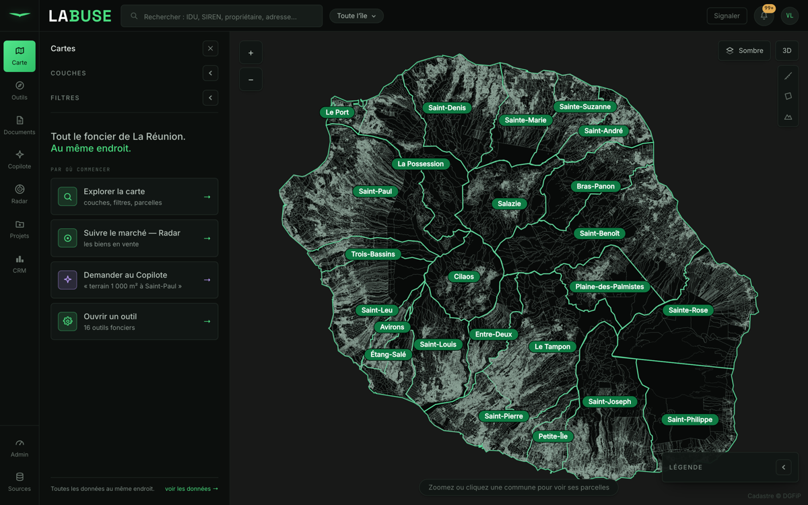
A1 · Build prod ✅ OK
Vic ouvre l’app servie par l’API (build de production).
A2 · Comptes ✅ OK
Vic voit la liste des comptes (essai [CT-PARCOURS] créé).
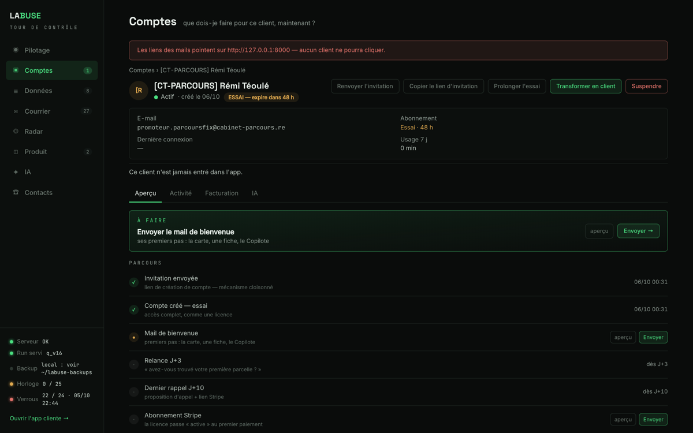
A3 · Fiche compte ✅ OK
La fiche expose « Copier le lien d’invitation » (G4 corrigé).
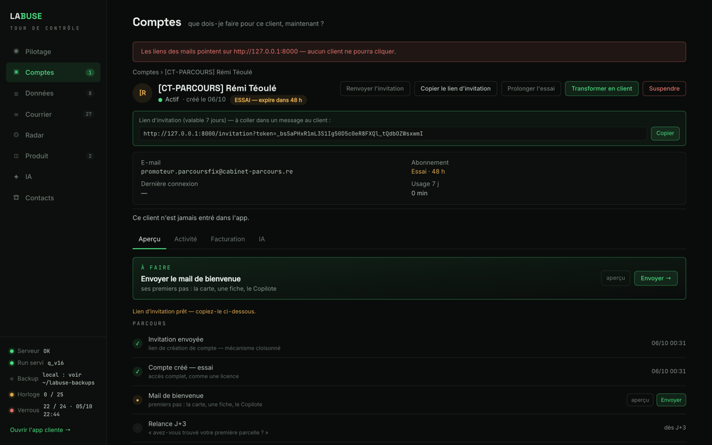
A3b · Lien copiable ✅ OK
Le lien d’invitation s’affiche, sélectionnable + bouton Copier.
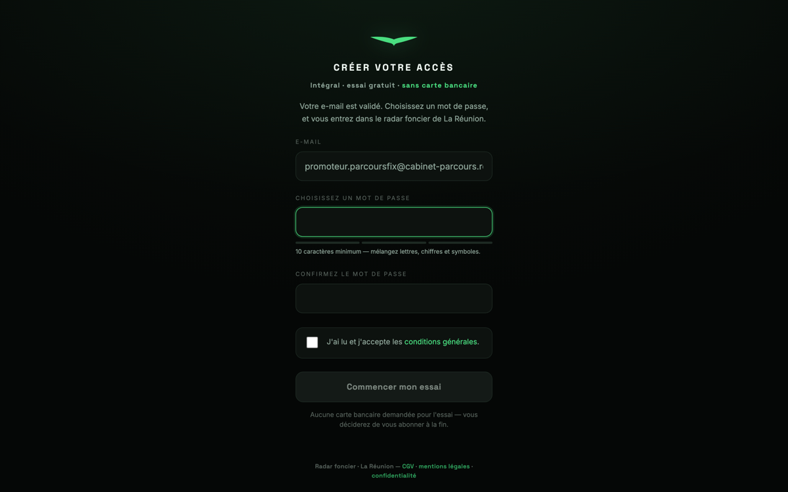
B1 · Choix du mot de passe ✅ OK
Le client choisit son mot de passe : champ de confirmation présent, CTA adapté à l’essai.
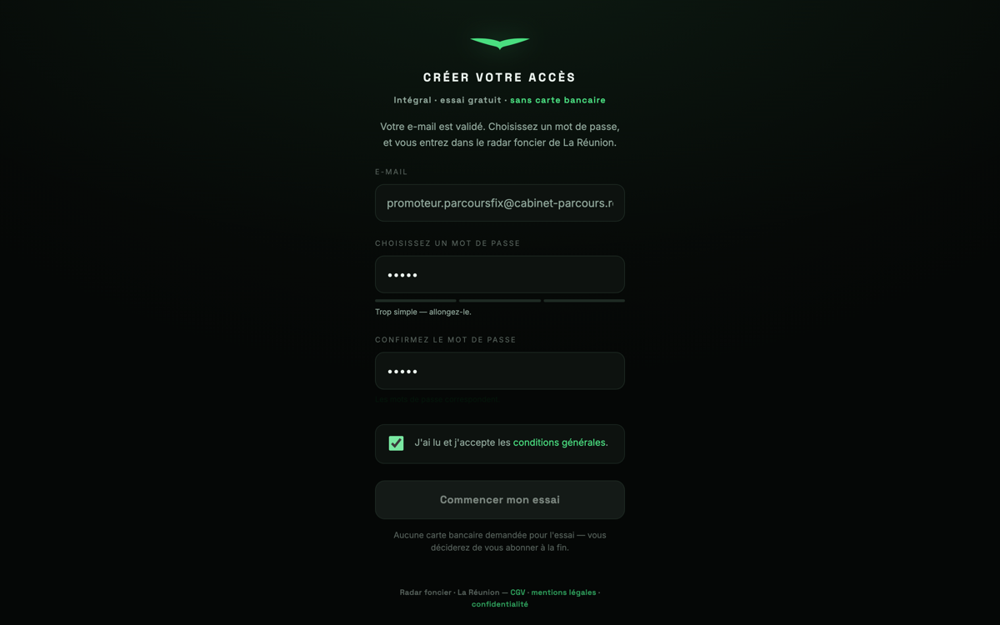
B2 · Règle 10 car. ✅ OK
Mot de passe trop court : le bouton reste éteint (règle imposée).
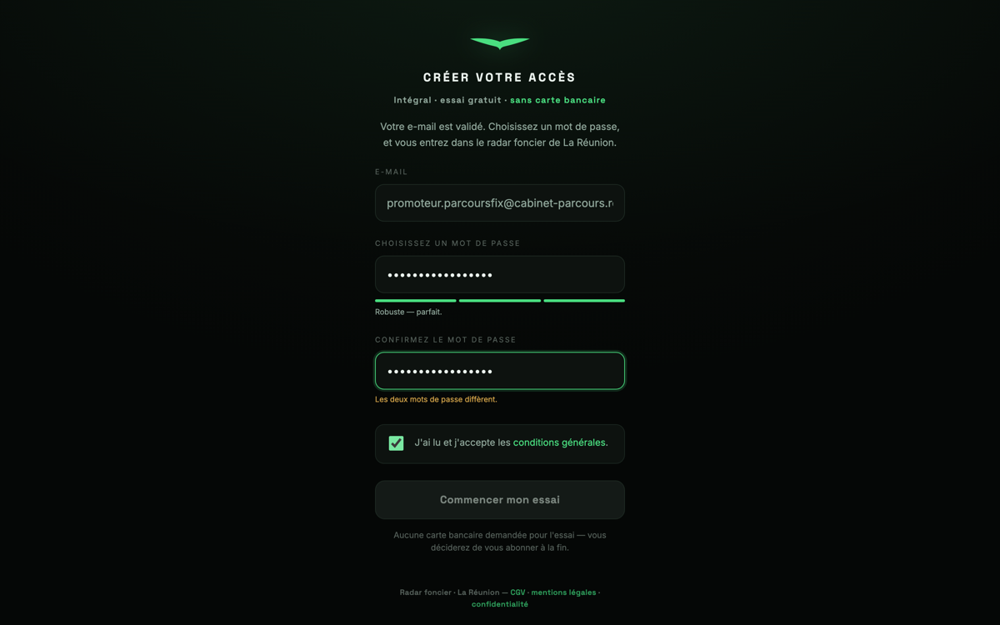
B3 · Confirmation ≠ ✅ OK
Les deux mots de passe diffèrent : bouton éteint, message clair.
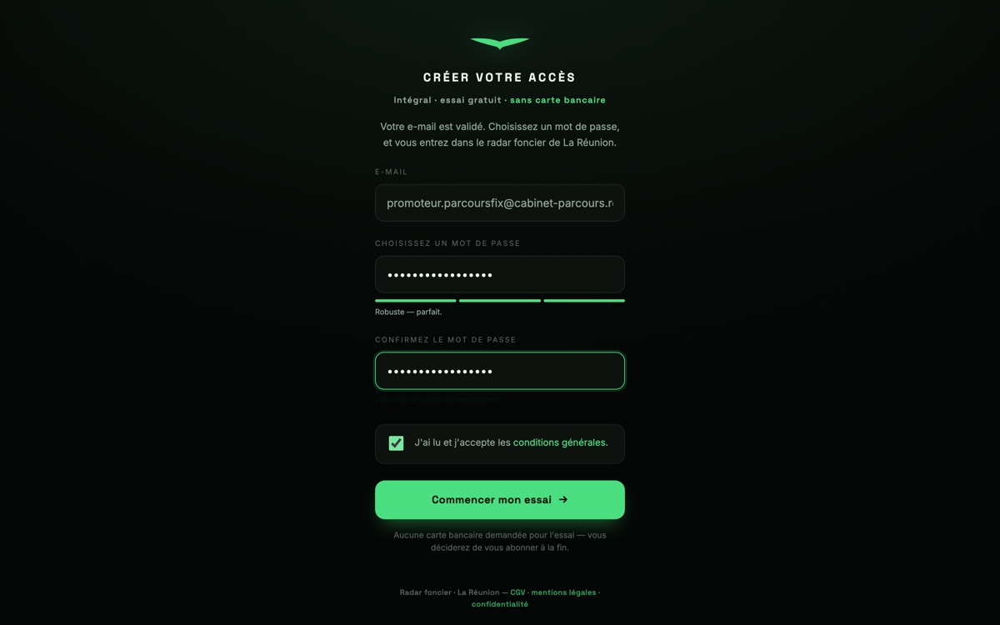
B4 · Prêt ✅ OK
Mot de passe conforme + confirmation + CGV : le bouton s’allume.
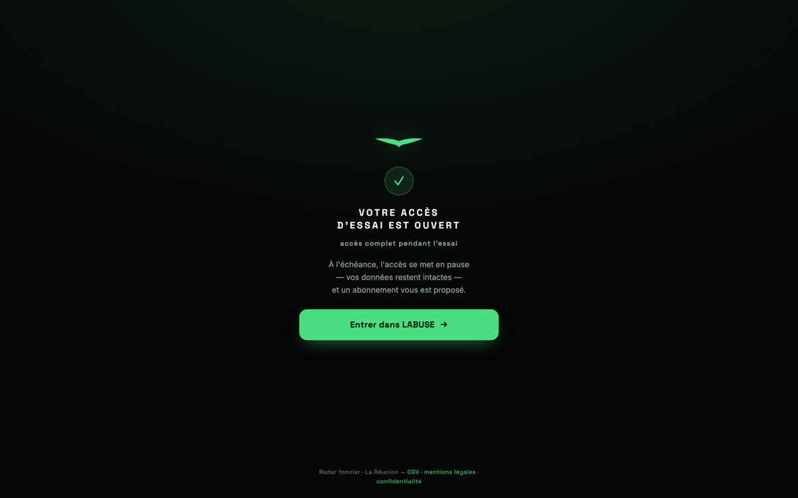
B5 · Accès ouvert ✅ OK
Le compte est créé — le client entre dans l’app (essai).
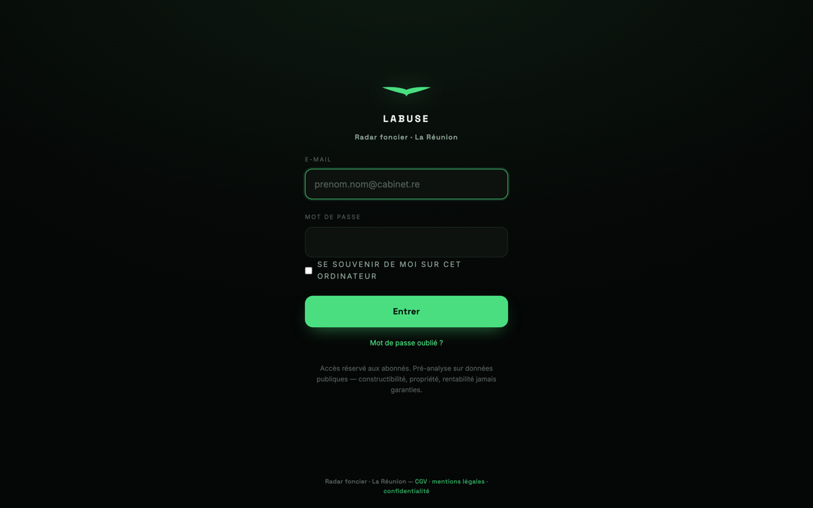
C1 · Connexion ✅ OK
La page de connexion propose « Se souvenir de moi ».

C2 · Session étendue ✅ OK
Connecté avec « se souvenir » : session ≈ 30 j (au lieu de 12 h).
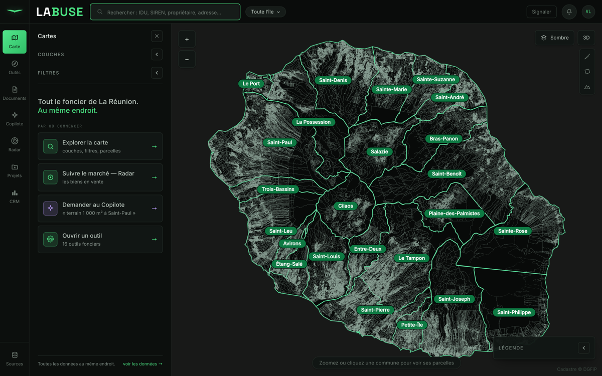
7.1 · Chercher une adresse / parcelle ✅ OK
Le promoteur ouvre : Chercher une adresse / parcelle.

7.2 · PLU / zonage ✅ OK
Le promoteur ouvre : PLU / zonage.

7.3 · Gabarit constructible 2D/3D ✅ OK
Le promoteur ouvre : Gabarit constructible 2D/3D.

7.4 · Taxe d’aménagement ✅ OK
Le promoteur ouvre : Taxe d’aménagement.

7.5 · Assembler deux parcelles ✅ OK
Le promoteur ouvre : Assembler deux parcelles.

7.6 · Faisabilité / programme ✅ OK
Le promoteur ouvre : Faisabilité / programme.

7.7 · Calculette foncière (bilan) ✅ OK
Le promoteur ouvre : Calculette foncière (bilan).

7.8 · Comparer des communes ✅ OK
Le promoteur ouvre : Comparer des communes.

7.9 · Fiche commune ✅ OK
Le promoteur ouvre : Fiche commune.

7.10 · Risques & servitudes ✅ OK
Le promoteur ouvre : Risques & servitudes.

7.11 · Étude de zone ✅ OK
Le promoteur ouvre : Étude de zone.

7.12 · Mon secteur ✅ OK
Le promoteur ouvre : Mon secteur.

7.13 · Patrimoine / successions ✅ OK
Le promoteur ouvre : Patrimoine / successions.

7.14 · Permis déposés ✅ OK
Le promoteur ouvre : Permis déposés.

7.15 · Baromètre du marché ✅ OK
Le promoteur ouvre : Baromètre du marché.

7.16 · Radar (marché en vente) ✅ OK
Le promoteur ouvre : Radar (marché en vente).
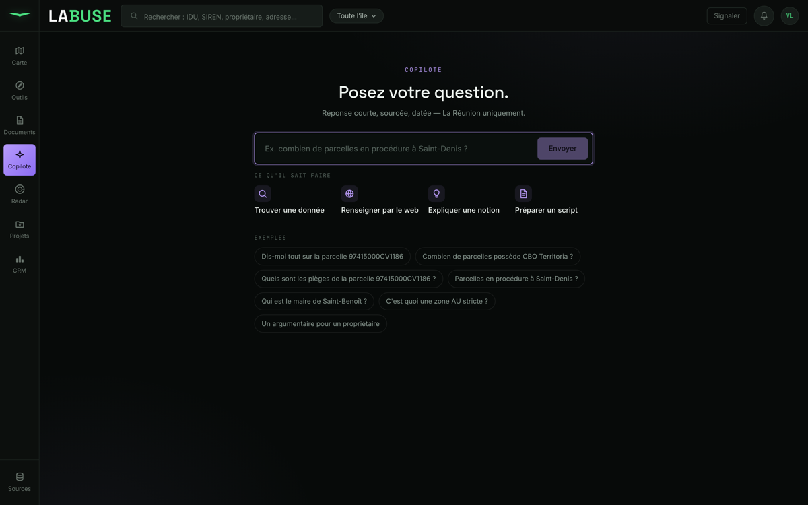
7.17 · Copilote (une question) ✅ OK
Le promoteur ouvre : Copilote (une question).

7.18 · Mes documents ✅ OK
Le promoteur ouvre : Mes documents.

7.19 · Veille promoteurs ✅ OK
Le promoteur ouvre : Veille promoteurs.
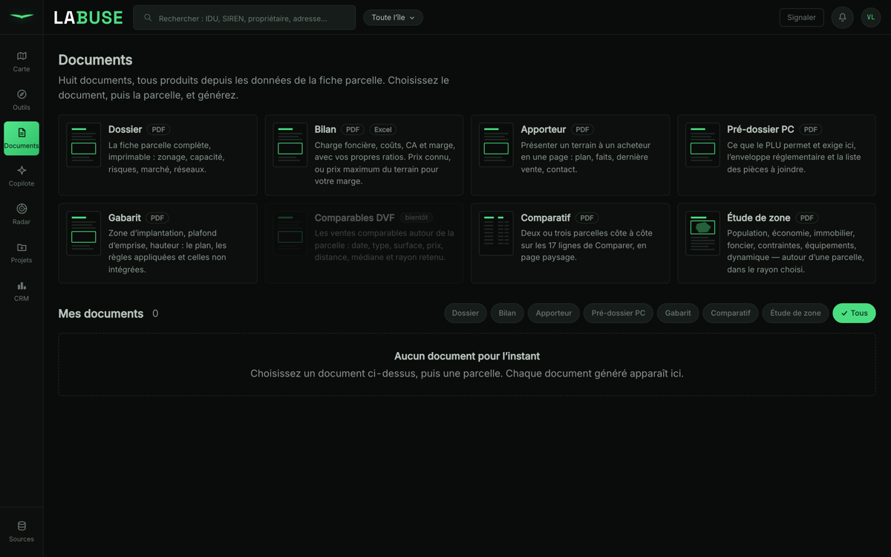
7.20 · Remonter le temps ✅ OK
Le promoteur ouvre : Remonter le temps.
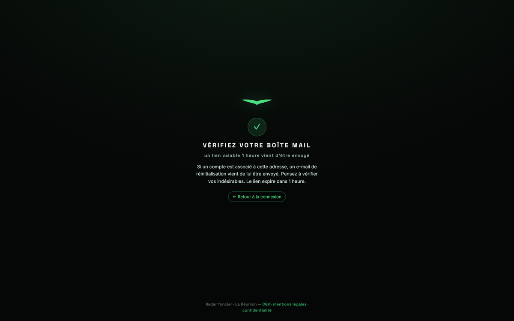
8.1 · Mot de passe oublié ✅ OK
Le client demande un lien de réinitialisation (dry-run → .eml).
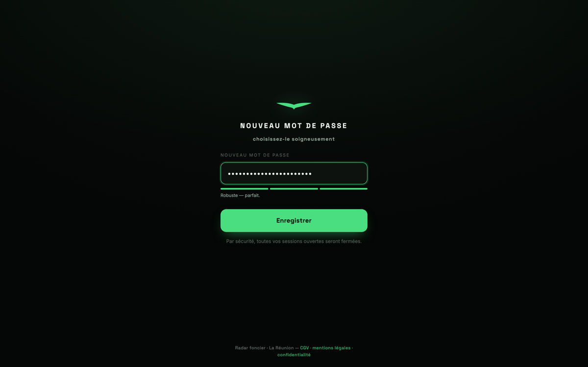
8.2 · Nouveau mot de passe ✅ OK
Le client pose un nouveau mot de passe via le lien reçu.
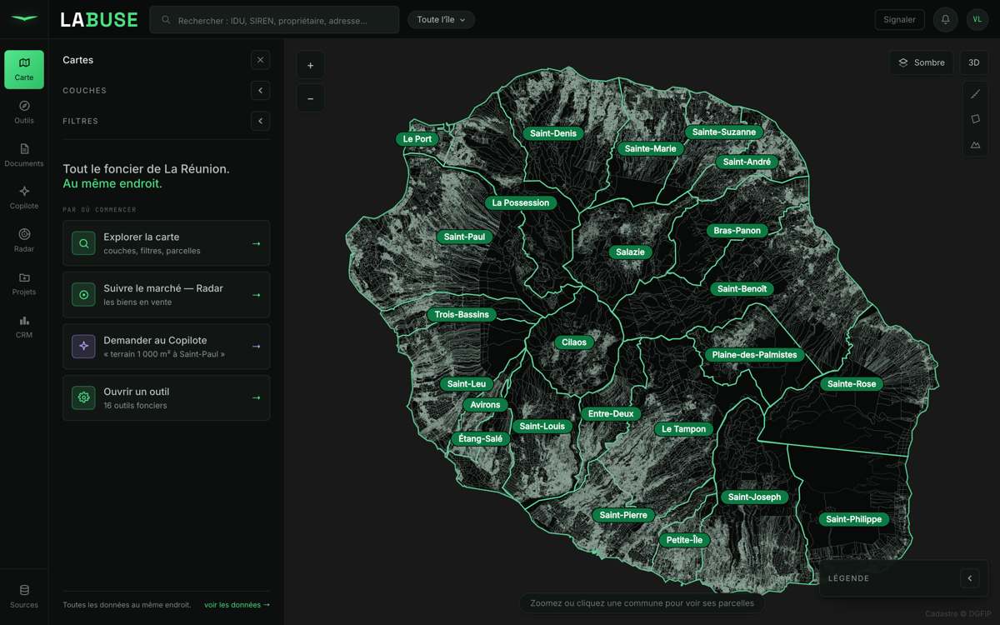
8.3 · Reconnexion ✅ OK
Le client se reconnecte avec le nouveau mot de passe.
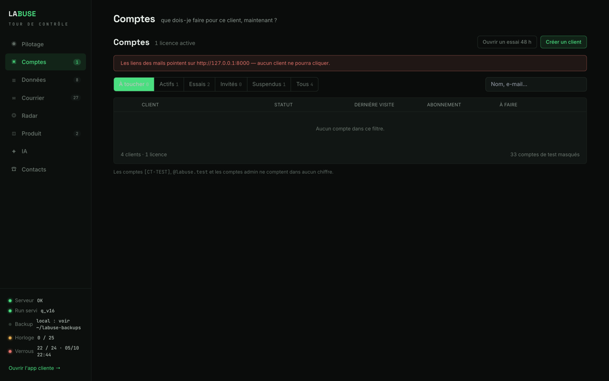
D1 · Suspension ✅ OK
Vic suspend le compte → le mail « suspension » part (file : suspension:a_rejouer).

D2 · Rétablissement ✅ OK
Vic rétablit le compte → le mail « rétablissement » part (file : retablissement:a_rejouer).
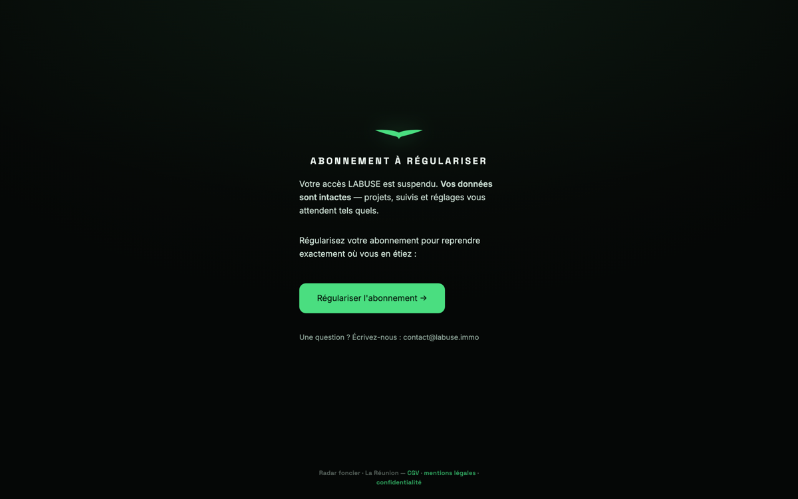
9 · Fin d’essai ✅ OK
Essai expiré : le client voit « abonnement à régulariser », données intactes.